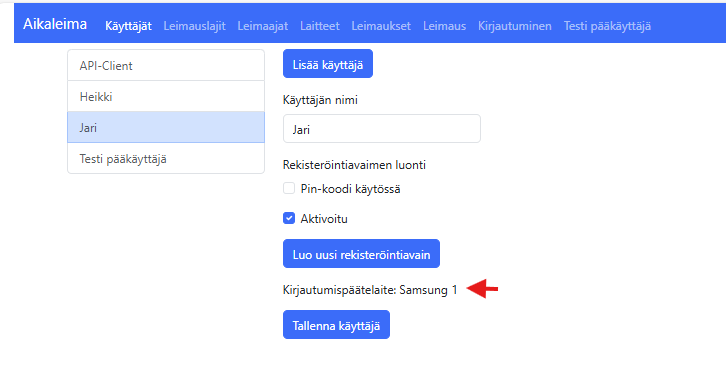
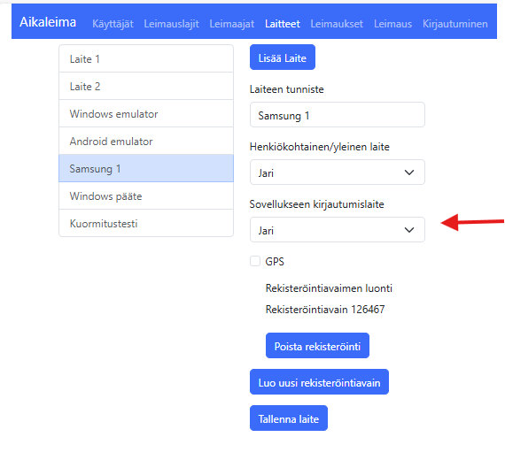
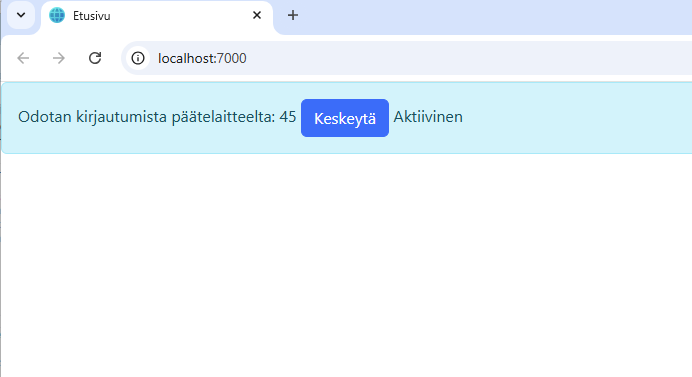
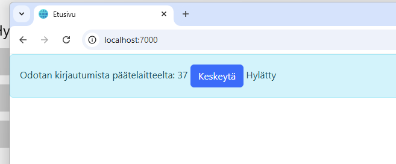
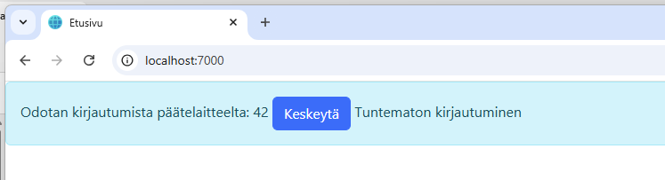
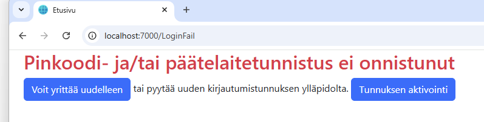

Kaksivaiheinen tunnistautuminen (MFA, Multi-Factor Authentication) on turvallisuusmenetelmä, joka vaatii käyttäjältä kahta tai useampaa todennustekijää päästäkseen käsiksi järjestelmään tai palveluun.
Tämä lisää ylimääräisen suojakerroksen pelkän käyttäjätunnuksen ja salasanan lisäksi, mikä tekee luvattomasta pääsystä vaikeampaa.
Käyttäjä ja laite
Käyttäjälle jolle kaksivaiheinen tunnistautuminen halutaan päälle tulee liittää päätelaite käyttäjään.
tällöin käyttäjä tiedoissa näkyy päätelaitteen tiedot.
Laitetietoihin tulee luoda henkilökohtainen laite johon käyttäjä asentaa leimaussovelluksen.
Laiteelle tulee laittaa sovellukseen kirjautuminen päälle valitsemalla käyttäjä listasta.


Sovelluksen käynnistyminen
Kun sovellus käynnistyy, se odottaa käyttäjän kirjautumista päätelaitteelta. Lopputulos riippuu siitä, miten käyttäjä päätelaitteellaan vastaa.
Mikäli kirjautuminen ei onnistu ohjautuu ohjelma virhesivulle, jossa on ohjeet käyttäjälle.




Kirjautumisen hyväksyminen
Leimaus-sovelluksessa on välilehti, jossa käyttäjä voi hyväksyä tai hylätä kirjautumisen. Jos kirjautumisen tila on aktiivinen, on painonappit valittavissa.